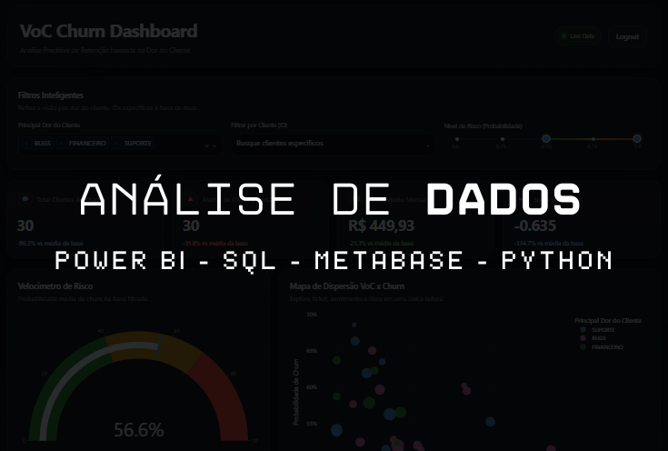
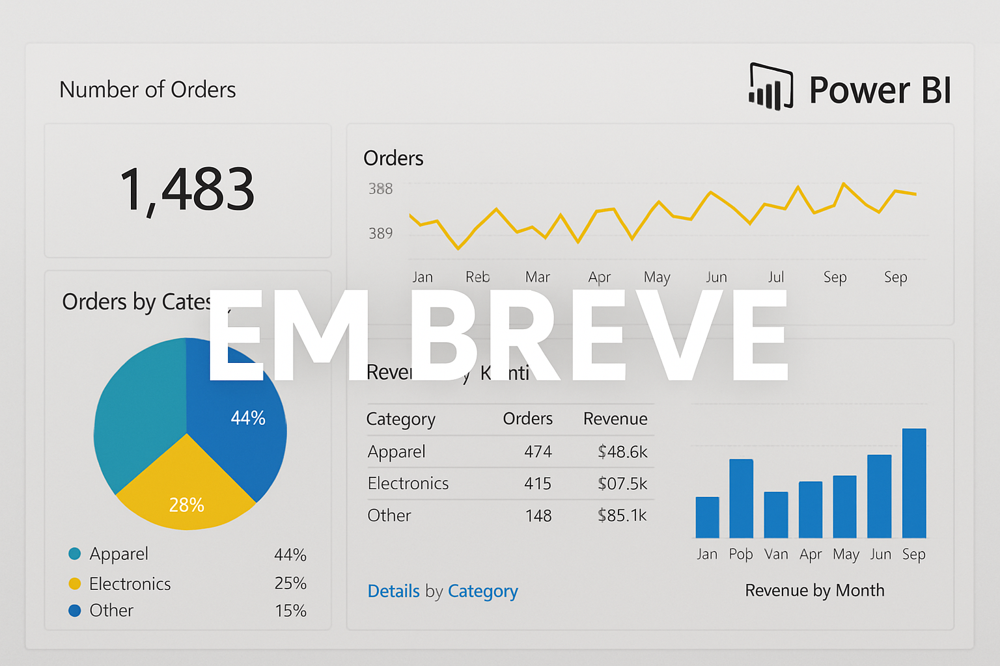
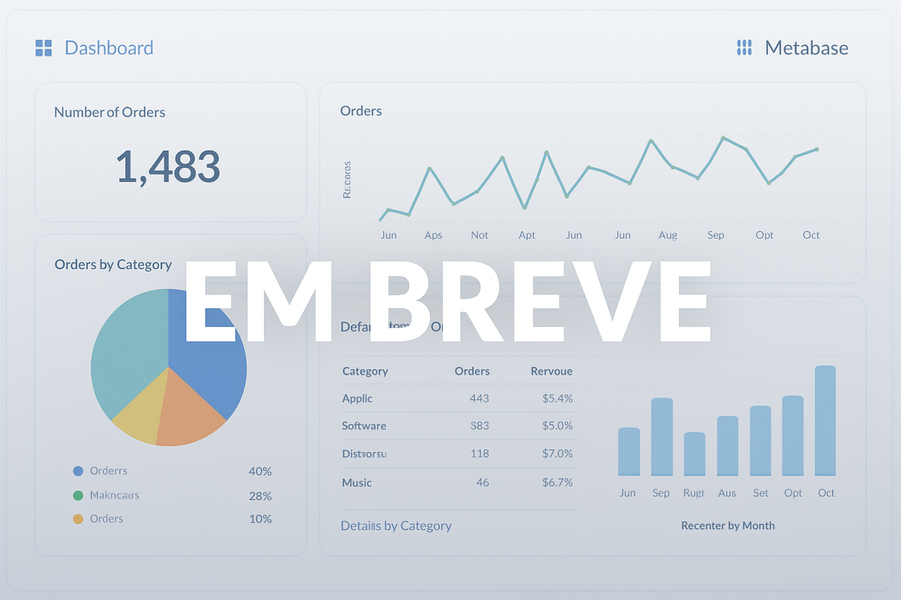
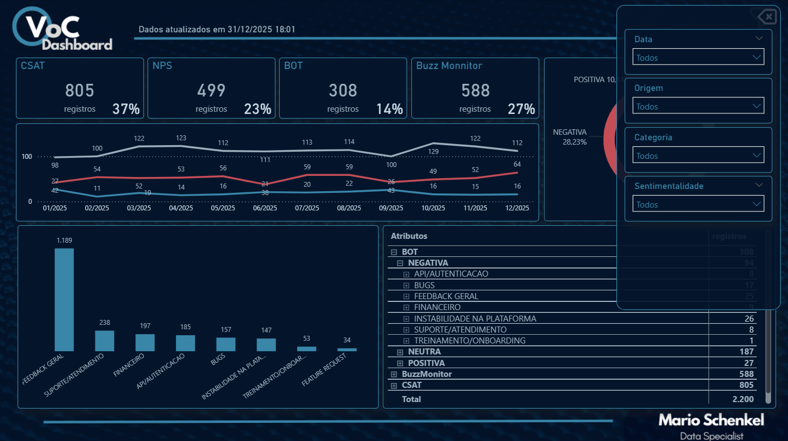

Visão analítica orientada por decisão
Camadas de leitura para liderança, operação e acompanhamento de resultado.
Sou Mário Schenkel, analista de dados com bagagem em controladoria, pricing e revenue management. Traduzo contexto, operação e indicadores em histórias claras para decisão.

Camadas de leitura para liderança, operação e acompanhamento de resultado.
Experiência de negócio, profundidade analítica e capacidade de transformar perguntas ambíguas em entregas claras.
Minha leitura começa no problema real: margem, performance, jornada, retenção e priorização. O painel é consequência, não ponto de partida.
Atuo da exploração em SQL e Python à visualização em Power BI, Metabase e Tableau, conectando análise, modelagem e adoção.
Experiência traduzindo necessidades de áreas de negócio em métricas, dashboards e planos de ação orientados por evidência.

Estruturas visuais pensadas para hierarquia de informação, clareza de métricas e velocidade na tomada de decisão.

Dashboards e consultas com foco em autoatendimento, monitoramento operacional e adoção pelos times.
Construí minha carreira em áreas como controladoria, FP&A, pricing e revenue management. Esse repertório me deu visão crítica de negócio e leitura financeira.
Hoje atuo no encontro entre analytics, visualização e tomada de decisão, desenhando soluções que ajudam empresas a priorizar melhor, entender comportamento e agir com confiança.
Entendo o objetivo da área e traduzo a pergunta de negócio em hipótese analítica.
Estruturo dados, métricas e narrativa para reduzir ruído e aumentar clareza.
Entrego um artefato que as pessoas realmente usam para decidir e acompanhar.
Data Analyst com foco em traduzir necessidades das áreas de negócio em modelagens e dashboards para jornadas de marketing.
Atuação em projetos de dados, integração de IA e construção de dashboards em Metabase e Tableau para análises financeiras.
Desenvolvimento de relatórios, automações e pipelines com Power BI e SQL para sustentar métricas estratégicas.
Suporte à gestão e governança das informações financeiras com foco em integridade e confiabilidade.
Selecione um foco para navegar mais rápido. Cada case abre um painel com contexto, solução, impacto e links.


Pipeline e dashboard para priorizar clientes de maior risco, entender drivers de evasão e orientar a atuação comercial.

Análise autônoma de pontos ofensores no DRE com priorização de plano de ação por ponto de venda.
Estou aberto a oportunidades em Data Analyst, BI e analytics com foco em impacto real no negócio.
Porto Alegre, RS - Brasil
Formulário pronto para deploy no Netlify, sem depender de serviços externos.